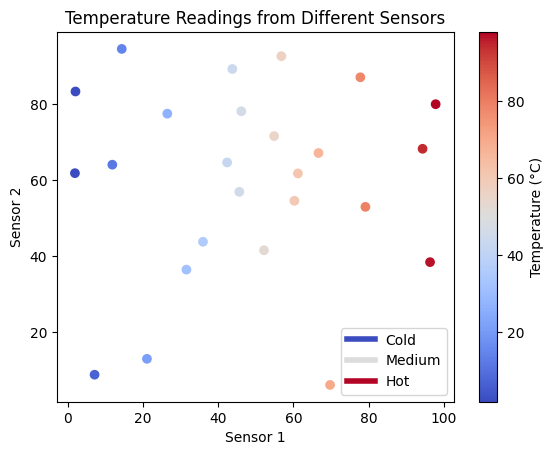

import os
import subprocess
import sys
# Define the environment directory
env_dir = "myenv"
# Function to run shell commands
def run_command(command):
process = subprocess.Popen(command, shell=True, stdout=subprocess.PIPE, stderr=subprocess.PIPE)
stdout, stderr = process.communicate()
if process.returncode != 0:
raise Exception(f"Command failed with error: {stderr.decode('utf-8')}")
return stdout.decode('utf-8')
# Remove the existing environment if it exists
if os.path.exists(env_dir):
run_command(f"rm -rf {env_dir}")
# Create a new virtual environment
run_command(f"{sys.executable} -m venv {env_dir}")
# Activate the virtual environment
activate_script = os.path.join(env_dir, "bin", "activate")
run_command(f"source {activate_script} && pip install --upgrade pip")
# List of top 30 Python packages to install
packages = [
"numpy", "pandas", "matplotlib", "seaborn", "scipy", "scikit-learn",
"tensorflow", "keras", "torch", "jupyter", "jupyterlab", "notebook",
"ipykernel", "jupyter-book", "requests", "flask", "django", "beautifulsoup4",
"scrapy", "nltk", "spacy", "pillow", "opencv-python", "plotly", "bokeh",
"sqlalchemy", "pydantic", "pytest", "coverage", "sphinx"
]
# Install the packages
run_command(f"source {activate_script} && pip install " + " ".join(packages))
# Install IRkernel for R
run_command(f"source {activate_script} && Rscript -e \"install.packages('IRkernel', repos='https://cloud.r-project.org/')\"")
run_command(f"source {activate_script} && Rscript -e \"IRkernel::installspec(name = 'ir', displayname = 'R')\"")
# Install Stata kernel
run_command(f"source {activate_script} && pip install stata_kernel")
run_command(f"source {activate_script} && python -m stata_kernel.install")
print("Environment setup complete.")
---------------------------------------------------------------------------
KeyboardInterrupt Traceback (most recent call last)
Cell In[1], line 37
28 packages = [
29 "numpy", "pandas", "matplotlib", "seaborn", "scipy", "scikit-learn",
30 "tensorflow", "keras", "torch", "jupyter", "jupyterlab", "notebook",
(...)
33 "sqlalchemy", "pydantic", "pytest", "coverage", "sphinx"
34 ]
36 # Install the packages
---> 37 run_command(f"source {activate_script} && pip install " + " ".join(packages))
39 # Install IRkernel for R
40 run_command(f"source {activate_script} && Rscript -e \"install.packages('IRkernel', repos='https://cloud.r-project.org/')\"")
Cell In[1], line 11, in run_command(command)
9 def run_command(command):
10 process = subprocess.Popen(command, shell=True, stdout=subprocess.PIPE, stderr=subprocess.PIPE)
---> 11 stdout, stderr = process.communicate()
12 if process.returncode != 0:
13 raise Exception(f"Command failed with error: {stderr.decode('utf-8')}")
File /opt/homebrew/Cellar/python@3.12/3.12.3/Frameworks/Python.framework/Versions/3.12/lib/python3.12/subprocess.py:1209, in Popen.communicate(self, input, timeout)
1206 endtime = None
1208 try:
-> 1209 stdout, stderr = self._communicate(input, endtime, timeout)
1210 except KeyboardInterrupt:
1211 # https://bugs.python.org/issue25942
1212 # See the detailed comment in .wait().
1213 if timeout is not None:
File /opt/homebrew/Cellar/python@3.12/3.12.3/Frameworks/Python.framework/Versions/3.12/lib/python3.12/subprocess.py:2115, in Popen._communicate(self, input, endtime, orig_timeout)
2108 self._check_timeout(endtime, orig_timeout,
2109 stdout, stderr,
2110 skip_check_and_raise=True)
2111 raise RuntimeError( # Impossible :)
2112 '_check_timeout(..., skip_check_and_raise=True) '
2113 'failed to raise TimeoutExpired.')
-> 2115 ready = selector.select(timeout)
2116 self._check_timeout(endtime, orig_timeout, stdout, stderr)
2118 # XXX Rewrite these to use non-blocking I/O on the file
2119 # objects; they are no longer using C stdio!
File /opt/homebrew/Cellar/python@3.12/3.12.3/Frameworks/Python.framework/Versions/3.12/lib/python3.12/selectors.py:415, in _PollLikeSelector.select(self, timeout)
413 ready = []
414 try:
--> 415 fd_event_list = self._selector.poll(timeout)
416 except InterruptedError:
417 return ready
KeyboardInterrupt:
# Import statements for commonly used packages
import numpy as np
import pandas as pd
import matplotlib.pyplot as plt
import seaborn as sns
import scipy
import sklearn
import tensorflow as tf
import keras
import torch
print("All packages imported successfully.")
All packages imported successfully.
import numpy as np
import matplotlib.pyplot as plt
from matplotlib import rcParams
from cycler import cycler
# Example data: temperature readings from different sensors over time
N = 10
np.random.seed(0)
data = np.random.rand(25, 2) * 100 # Simulate temperature data (0 to 100 degrees)
# Create a colormap
cmap = plt.cm.coolwarm
# Setting the color cycle
rcParams['axes.prop_cycle'] = cycler(color=cmap(np.linspace(0, 1, N)))
# Plotting the data
fig, ax = plt.subplots()
scatter = ax.scatter(data[:, 0], data[:, 1], c=data[:, 0], cmap=cmap)
# Custom legend
from matplotlib.lines import Line2D
custom_lines = [Line2D([0], [0], color=cmap(0.), lw=4),
Line2D([0], [0], color=cmap(.5), lw=4),
Line2D([0], [0], color=cmap(1.), lw=4)]
ax.legend(custom_lines, ['Cold', 'Medium', 'Hot'])
# Adding color bar for better interpretation
cbar = plt.colorbar(scatter)
cbar.set_label('Temperature (°C)')
plt.xlabel('Sensor 1')
plt.ylabel('Sensor 2')
plt.title('Temperature Readings from Different Sensors')
plt.show()

There is a lot more that you can do with outputs (such as including interactive outputs) with your book. For more information about this, see the Jupyter Book documentation